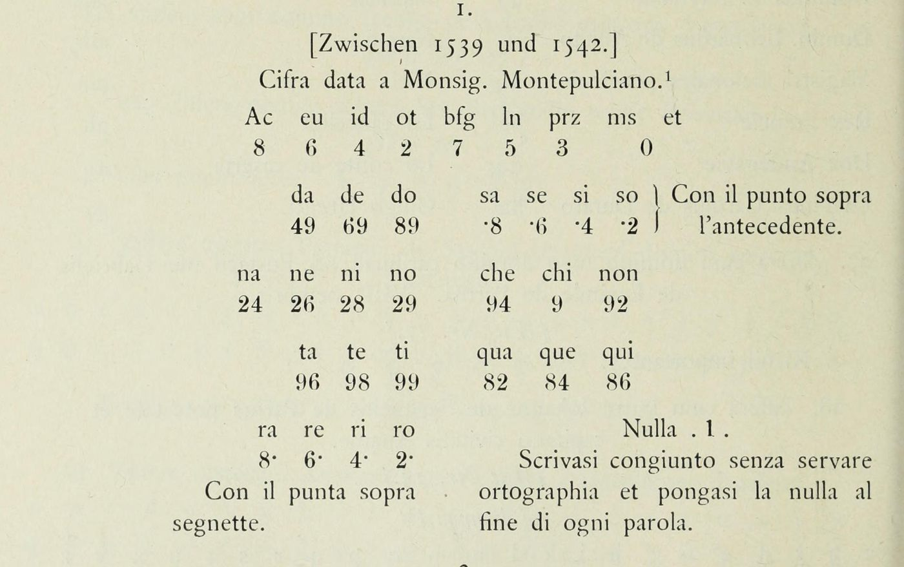

Not solved — but no longer unidentified
Five attacks have been run here against this cryptogram. It is still unread. What changed this session is that the cipher now has a name: it is a polyphonic-syllabic cipher of the kind invented by Antonio Elio, cipher secretary to Paul III and therefore to the very chancery that sent this letter. Every structural measurement made here turns out to match that documented design, including one that reproduces a written chancery instruction. And the specialists who solved its siblings state in print that ciphertext-only attack on this family is “nearly impossible, even with modern computing”.
01 The document
Four folios, 6549 code digits, with long passages left in clear. The clear passages date and place it beyond doubt: they mention la dieta di Spira, the Diet of Speyer which sat from February to April 1542; la materia della pace and la parte di Francia, the negotiations between Charles V and Francis I; a papal breve for quello di Osma; and the couriers Gioi da Montepulciano and Montepescali. The fascicle is catalogued as Lett. Orig. e cifre del card. Farnese al nunzio, 4 oct 1539 – 24 nov 1548.
The courier's name is a tantalising detail. Aloys Meister printed, in 1906, a key headed “Cifra data a Monsig. Montepulciano” and dated between 1539 and 1542, and another headed “Cifra ultima con Mons. Poggio mandata per il Montepulciano” — the last cipher with Poggio, sent by way of Montepulciano. The right people, the right courier, the right years. Neither key fits, and that is checked below.
02 What is established
Digit 4 is a null, but not a word separator
Conditioning on 4 in the middle drops the mutual information between its neighbours to 0.030, which is what Italian gives across a word boundary (0.028), where every other digit sits between 0.08 and 0.17. Meister's key of 1539–42 spells the convention out: “pongasi la nulla al fine di ogni parola”, put the null at the end of every word. This scribe did not. There are 482 nulls where the text needs about 1300 word ends, so the stretches between them average 12.6 digits — far too long to be words, which misled two earlier passes here. The chancery instruction quoted in section 04 resolves it: the null marks the end of a letter or syllable carrying an abbreviation, not the end of a word.
The vowel-bearing digits are {7, 0, 3}
Italian ends about 97% of its words in a vowel, so word-final enrichment separates the classes. Over the 482 stretches: 1: 1.79 7: 1.76 3: 1.52 0: 1.49 against 6: 1.01 9: 0.64 2: 0.58 5: 0.25 8: 0.08. Digit 8 ends a word at one twelfth of its overall rate.
The frequency masses agree independently, to three decimals: {7,0,3,1} carries 0.476 of the text where all five Italian vowels carry 0.479. And a third line, new this session, agrees again — every string enriched immediately before a null ends in one of those digits.
Two units carry a third of all word endings
Scanning every n-gram for enrichment before a null gives an extremely sharp answer.
| unit | occurrences | immediately before a null | p |
|---|---|---|---|
| 27 | 265 | 86 | 7.4 × 10−33 |
| 80 | 349 | 82 | 4.2 × 10−21 |
| 73 | 222 | 38 | 9.8 × 10−7 |
| 37 | 73 | 17 | 1.7 × 10−5 |
27 and 80 together end 35% of the marked words. For comparison, the commonest two-letter ending in real Italian takes under 5%. Word endings this concentrated are single codes, not letter pairs.
Two-digit units, and a real phase
The stretches between nulls prefer even lengths, 278 against 202, chi-squared 12.0 on one degree of freedom. An earlier pass here looked at exactly this and recorded “no preference”; that was an error, and it cost two attacks.
Inside those stretches the digit distribution at even offsets differs from the one at odd offsets: chi-squared 39.4 against a null of 8.3 ± 4.1 built by shuffling each segment, z = +7.6. Digit 9 sits at even offsets 1.60 times as often as odd.
Every doubled digit is suppressed, some severely — 00 occurs 6 times against 117 expected,
44 twice against 35, 99 twice against 21. Four hundred shuffles of the same digits produce a
mean of 0.01 such suppressed pairs and never more than one.
03 What is excluded
No key of that kind exists to find
A constrained trigram search, with vowels restricted to {7,0,3,1} and consonants to {8,5,2,6,9}, gives 24 different keys in 24 runs, mean agreement 0.861 where chance in the same constrained space is 0.799.
That alone would only mean the search failed. So the identical search was run on a synthetic ciphertext built to the same design — real Italian, same alphabet, same vowel split, same polyphony, same null density, same 6553 digits.
| agreement between runs | recovers the key? | |
|---|---|---|
| synthetic, same design | 0.90 | yes, 0.97 |
| the real ciphertext | 0.86 (chance 0.80) | no |
The method works at this polyphony, this length and this alphabet. The real text is therefore not a polyphonic single-digit substitution of Italian.
The consonant runs are three times too long
If each digit stood for one letter, the alternation of vowel-digits and consonant-digits would have to match Italian's own. The share matches. The runs do not.
| cipher | period Italian | |
|---|---|---|
| vowel share | 0.475 | 0.464 |
| mean vowel run | 1.604 | 1.301 |
| mean consonant run | 1.769 | 1.504 |
| consonant runs of 3 or more | 0.183 | 0.059 |
And the three tests that fix the vowels disagree about the fourth member. Frequency mass picks {7,0,3,1}; a search over all subsets for the best match to Italian's run profile picks {0,2,3,7}; the final-digit distribution picks {7,0,3,6}. All three agree on {7,0,3} and contradict each other beyond it. No single letter-level assignment satisfies all three, which is exactly what happens when the units are not letters.
Including the two named for the right courier
Read directly from the 1906 page images rather than from OCR. Key 1, Cifra data a Monsig. Montepulciano, has Nulla 1 where this cipher's null is 4. Key 2, the Poggio cipher sent by Montepulciano, puts the vowels on 3 5 7 9 0, which the word-final evidence contradicts. Key 3, which shares the null 4, predicts digit 8 at 5.0% of the text where it is observed at 13.6%. Key 4 writes vowels as two-digit codes beginning with 1, which would make digit 1 about 40% of the text; it is 3.1%.
Meister sampled these from Rome, Biblioteca Chigi M II 49, ff. 85–148 — some sixty folios of Vatican keys of 1539–1566, of which he printed a handful. The key to this letter is most likely in that manuscript, which is not digitised.
04 What the cipher is
Antonio Elio (1506–1576), known in his own lifetime as Antonio delle Zifre, was cipher secretary to Paul III — the pope whose cardinal-nephew and Secretary of State, Alessandro Farnese, wrote this letter. He is credited with inventing the polyphonic cipher, and he trained the Argenti brothers who followed him. In 2025 Lasry, Simonetta and Biermann published a reconstruction of one of his designs. It has four properties:
- Syllabic. Most symbols encode consonant-vowel syllables, with a few for clusters or short words.
- Polyphonic. Every syllable symbol carries two meanings, and the second is chosen by a dot on the preceding symbol. The dots are applied inconsistently, so even a secretary holding the key is often guessing.
- Compound symbols. Some elements are encoded by pairs, so any symbol may be stand-alone or half of a pair.
- h and every doubled letter are dropped before encryption.
Each of those makes a prediction, and this cryptogram satisfies all four.
| measured here | Elio's design |
|---|---|
all ten doubled digits suppressed — 00 occurs 6 times against 117 expected | doubled letters dropped before encryption |
| dotted digits are 7, 2, 0 and the digit after a dot is 2/0/7/5 | the dot sits on the antecedent and selects the alternate meaning |
word-final units are two digits, 27 and 80, at p < 10−20 | consonant-vowel syllables as units |
| unsupervised units come out 15% one digit, 32% two, 29% three; the even-length preference is real but only 58/42 | any symbol may be stand-alone or half of a compound |
| consonant runs three times too long for letters | the level is syllables, not letters |
The doubling rule is not an inference. Meister prints the Farnese chancery’s own written instruction:
“Scrivasi stretto et senza duplicare le consonanti quando occorrono dittioni che la ricerchino” — write tightly, and without doubling the consonants where the words call for them.
The same instruction says other names may be abbreviated “con il segno della nulla in fine della lettera o sillaba”, with the null at the end of a letter or syllable. That reframes digit 4: it is an abbreviation and syllable marker, not a word separator — which is why the stretches between nulls average 12.6 digits and never did look like words.
05 What the specialists say about breaking it
Lasry, Megyesi and Kopal worked this exact corpus for Cryptologia in 2021. Two of their sentences govern everything here. On the one published key that names Poggio — the one whose title matches this letter’s own courier — “attempts to decipher the ciphertexts using that key did not produce any result.” And on the cipher itself: “The scheme appears to be a variable-length polyphonic cipher, which is a unique case in the Vatican collections … The ciphertexts in the second part (IA-2) seem to belong to another key.”
Their phrase for the scheme, variable-length polyphonic, is what the run-length, phase and compression work on this page arrived at from the other direction, without having read it.
The 2025 paper is blunter. “Ciphertext-only cryptanalysis for such a cipher would be extremely difficult and nearly impossible, even with modern computing, without prior knowledge of the principles of its complex design.” And with matching plaintext in hand, recovering the key of a sibling took three expert cryptanalysts two full days to make initial inroads, and many hours more to finish.
06 The plaintext is unpublished — but its neighbours are not
No edition, calendar or regesta prints this letter. The Spanish nunciature of the period has no published series at all: Monumenta Hispaniae Vaticana stops at 1486, Olarra’s index begins in 1556, Serrano covers 1566–72. Nuntiaturberichte aus Deutschland I/7 prints Poggio but jumps from December 1541 to July 1543, its editor noting that the 1542 correspondence survives only in fragments. Concilium Tridentinum IV prints Farnese to Poggio on 5 February and 4 June 1542 and has nothing from April; its two April letters go to the nuncio in France instead. Pastor prints exactly two Farnese–Poggio letters, February 1541 and August 1542.
Three manuscripts would settle it, and none is digitised:
- Naples, Archivio di Stato, Carte Farnesiane 723 — a Farnese to Poggio letter of 12 April 1542, three days before this one and in the same courier cycle.
- AAV, Lettere de’ Principi 14 A — the Farnese to Poggio register copies, running to 4 June 1542. This is where the printed editions took their texts.
- BAV, Chigi L III 65 — the originals, 348 folios. Calibrating from dated letters in the editions puts 23 November 1541 at f. 153 and 29 June 1542 at ff. 191–195, so 15 April 1542 should sit at roughly ff. 165–190.
These registers are repeatedly described as carrying contemporary interlinear decipherments. A clear copy may simply be sitting there.
07 The finding that best explains why this one resisted
Part 4 of the same challenge series is the Portugal cryptogram from the same Vatican collection, and it was solved. Compare the two transcripts as they are distributed.
| transcript | single spaces between digits | double spaces |
|---|---|---|
| Portugal IA-1 — Part 4, solved | 7603 | 3210 |
| Spain IA-2 — Part 5, this one | 6412 | 6 |
The Portugal transcriber recorded the scribe's word division. The Spain transcriber did not. Sixteenth-century chancery clerks grouped their cipher digits, and that grouping is on the parchment — but it is absent from the only transcript in circulation. Every attack on Part 5, here and presumably elsewhere, has been run on a stream with its word boundaries deleted.
That is not a small handicap. It is most of the difference between the two problems, and unlike everything else on this page it is fixable — from the manuscript images, which MysteryTwister does not distribute and the Vatican has not digitised.
08 The last structural question, answered
If the text sat on a fixed two-digit grid it could be cut into units and attacked as a substitution over about a hundred symbols with three thousand tokens. That is tractable, and it is the one thing that would make this cryptogram breakable. So it was tested directly, in the three ways the null could behave.
| phasing | chi-squared, even vs odd | shuffle null | z |
|---|---|---|---|
| null counted, absolute index | 6.8 | 9.0 ± 4.2 | −0.53 |
| null deleted, global index | 4.3 | 8.0 ± 4.0 | −0.93 |
| null deleted, per cleartext run | 4.3 | 8.0 ± 4.0 | −0.93 |
All three sit below their shuffle nulls. There is no fixed two-digit grid anywhere in the text. The only phase signal is a local one that restarts at each null, and it is modest.
That is the final piece, and it is exactly what Elio’s compound symbols predict — any symbol may be stand-alone or half of a pair. Without a segmentation there is no unit inventory; without a unit inventory there is no substitution to attack; and the polyphony doubles every unit’s meaning on top of that.
09 Where it stands
The cipher is a variable-length syllabic code: mostly two-digit units, some of one digit, over vowel-bearing
digits {7,0,3} and consonant-bearing {8,5,2,6,9}, with 27 and 80 as the dominant word-final
units and 4 as an intermittent word null. The arithmetic is consistent — 6068 non-null digits at about
two per unit is some 3000 units, at about 2.3 units per word some 1300 words of four to five letters, which is ordinary
Italian for four folios.
Against a shuffle of its own digits the text has 441 repeated 7-grams where the shuffle gives 5, and 244 repeated 8-grams where the shuffle gives none. Unsupervised byte-pair encoding separates it from both controls: compression gain +1.6% for the cipher, −8.2% for genuine Italian pushed through a polyphonic single-digit cipher, −14.0% for a shuffle. It is a codebook, and it recurs because the same words recur.
What would open it is the word division from the images, or the key from Chigi M II 49, or a matching plaintext in the Farnese correspondence of April 1542. Not another search. Five model classes have now been tested here, two of them against matched synthetic controls that the same code solves correctly.